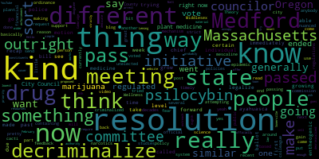

[Leming]: Hello, this is Matt Leming. I'm a city councilor in Medford, Massachusetts. I'm just trying some of these YouTube recaps to offer another way to do outreach for my constituents over in Medford. And I'm going to try this a few times, see how it works out, see if people generally like these sort of recaps, and then see how it goes from there. So this past City Council meeting on February 6th, there is probably enough material to go through that to occupy several different videos, several different blog posts on my website. But what I want to cover now is the first resolution that I proposed at a Medford City Council meeting, which is the resolution to decriminalize plant medicine. Now this is a pretty simple resolution. It basically says that entheogenic plants such as psilocybin, ayahuasca, ibogaine, mescaline-containing cacti, things like that should be decriminalized by law enforcement officials in Middlesex County and Medford. This is not a strict ordinance that will outright I shouldn't say, it's not a strict ordinance that will outright require them to decriminalize that. City Council doesn't have the authority to do that, but it does officially ask them to make it the lowest priority. So, you know, don't dedicate resources to arrest people who are growing these things on their own. That's not the same thing for people who are attempting to sell them for financial gain, but strictly it decriminalizes just growing it on your own for your own use. Now, this is part of a wider thing. It's meant to support a state-level initiative, so Medford is the eighth town to pass this. Somerville, Cambridge, Northampton, Eastampton, Amherst, Salem, and Provincetown also passed very similar resolutions. Senator Jalen has a bill going through the Massachusetts State Senate right now, which would outright decriminalize the use of these different entheogenic plants. You know, it doesn't legalize selling it for a financial gain, but it just it just decriminalizes growing it on your own. And so that's the bill that would outright make that legal at the state level. What's going on right now, and the reason that this bill is so timely, is because there is a And there's an effort on the part of an organization called Baystaters, which is trying to really push Beacon Hill to pass this. And there is another group which is attempting to legalize these sorts of plant medicines through similar means. through a completely different mechanism, similar decriminalization, but legalize them through a totally different mechanism, which is by collecting signatures from individuals around the state of Massachusetts to make it into a ballot initiative. Now, the difference between the two of these is that passing it through the state house would just make it so that anybody's able to grow their own versions of these plant medicines. The ballot initiative, would make it so that people that go through a course are able to prescribe and go through therapeutic sessions with these sorts of medicines, but it wouldn't outright decriminalize them. Now, the reason that this is not favorable is because it's been tried before in Oregon, and the effect of having this sort of convoluted system where only certain individuals are able to give out these kinds of medicines is that the price of these things like psilocybin, psilocybin, ayahuasca, ends up skyrocketing. So right now in Oregon, if you want to take psilocybin or other kinds of entheogenic medicines for something like PTSD, addiction, and recent studies are showing that these are some of the most effective treatments for these, if you want to take that in the state of Oregon, it would cost you upwards of $3,500. Now, it doesn't take anywhere close to that to actually produce. and grow these things on your own. But because they're regulated in a certain way and because state lawmakers can't get rid of something that was passed by a ballot measure, now Oregon is kind of stuck with this system where it's regulated by an unelected commission that was put there through a direct vote. And right now a similar initiative is currently underway in Massachusetts. So this resolution, I'm very glad that it passed. It is a way to show support to just making it so that people can grow these things on their own without having any kind of an an unelected commission or weird regulations happening around it. And I really think that's the best way forward. More generally speaking, this is a way to advocate for more nuanced drug policy in Medford and the state of Massachusetts generally. So for a long time, drugs have been regulated out of a sense of fear, and basically all forms of illegal drugs, from marijuana to the harder stuff like narcotics, were pretty much put into the same category. I think this was done due to a lack of public education, this was due to fear, this was due to a hard-on-crime kind of an attitude, but it was not done out of any kind of nuanced science-backed policy. So what's really needed when enforcing different kinds of regulations on drugs these days is to have policies that are based in science, that are based in very contextualized studies of the individual drugs that are being regulated. We've started to do that in recent years with marijuana. So just this past week, I went to the ribbon cutting for Theory Wellness, the Theory Wellness dispensary on Mystic Avenue in Medford. And this came after decades and decades of marijuana being criminalized and people being thrown in prison for it. Now this also comes on the wake of the fentanyl epidemic that America is currently going through, which went on the heels of the opioid crisis that we also went through that was caused by Purdue Pharma. So, I've read about these issues extensively, I've read Empire of Pain by Patrick Roddick Keefe, great book, and I've seen comments from people who say, okay, you're decriminalizing certain kinds of drugs now, is that a slippery slope? And I really don't think it is. you know, these different, these other kinds of plant medicines, as they're called in the resolution, you know, ayahuasca, mescaline-containing cacti, psilocybin. I think that they are at a level above marijuana. But they are not the kinds of things that cause public health epidemics in the same way that narcotics do. So I don't think that they should be criminalized in exactly the same way. When we're dealing with different kinds of drugs, we need different kinds of policies behind them. And that is an important thing to keep in mind when crafting any sort of legislation. More generally, this past Tuesday was interesting for me because this was my first resolution of any kind that I tried to pass, and I did a couple of things wrong, which is why anybody that tuned into the meeting might have been a little bit confused by how things went. This is a non-binding resolution, it's more of a request to the Middlesex County District Attorney and the Chief of Police asking them to deprioritize something. And so when it was introduced, what happened was I gave a speech on it, I said why I think it should be passed by the city council, and then I just kind of did nothing. And so then a colleague of mine who wanted feedback from the chief of police, he made a motion to send it to committee. Now, I know that this is a very timely resolution and sending it to committee could delay it for months, so I didn't really like that turn of events, but I had also made the mistake of not immediately pushing the question on it, of not immediately trying to pass making a motion to pass the resolution itself. So that was on me. Initially, it was sent to Committee 5-2 with me being one of the dissenting votes on it. But after, at the end of the meeting, one of my colleagues, Councilor Collins, who ended up seeing that I was not happy with how that came about, who saw that this was just, you know, a first time Councilor who wasn't, you know, who, you know, didn't realize that I should have, you know, pushed forward, made a motion to pass the resolution immediately. She ended up invoking something called Rule 28, which says that if you voted yes on something earlier in the meeting, you could call it back to a vote again if you want to change your vote on that. So she had voted yes on to send it to committee so that she then brought it back. And we ended up passing the resolution six to one with the only amendment to the resolution being that it would come with an official request for feedback from the chief of police. So it ended up working out. It was a little bit bumpy, but I was very proud that I got one resolution passed. It was for an initiative that's very complicated, but which I really, really believe in. And yeah, I'm a new city councilor and I'm learning a lot. So I hope that this video provides some insight into the background of these things. I'd really be interested to know if y'all like this kind of in-person in-person recap instead of just having it written in a blog post. So just let me know what you think, either via personal email or something like that. And yeah, I'm looking forward to the committee meetings next week and the next regular meeting on the 20th. So have a great week, guys. Later.
|
total time: 11.54 minutes total words: 1624  |
|||
{kind=link}